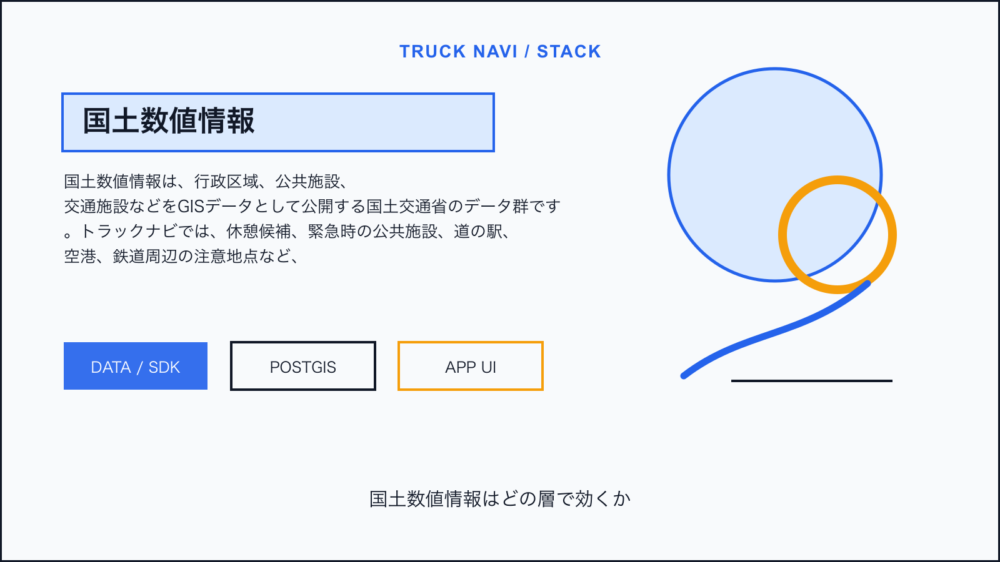
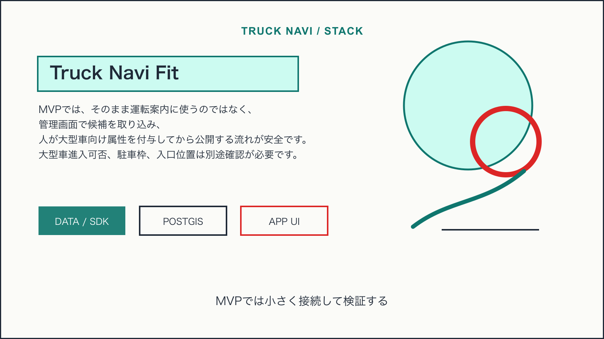
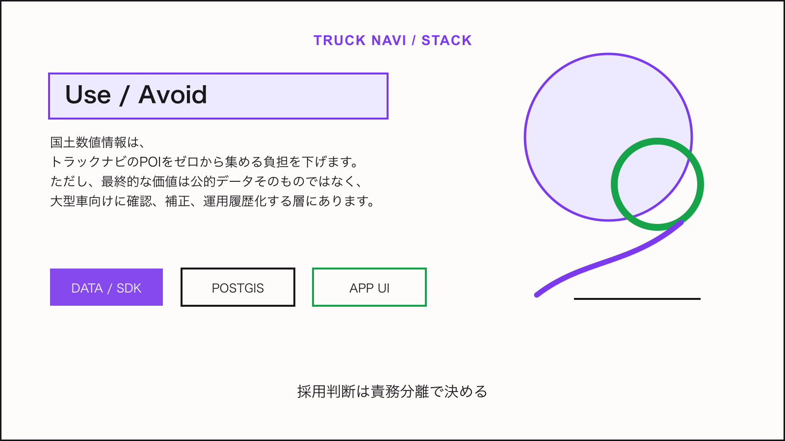

Tech Stack / Truck Navi
国土数値情報をトラックナビの公共施設・交通POI候補に使う

この技術は何か
国土数値情報は、行政区域、公共施設、交通施設などをGISデータとして公開する国土交通省のデータ群です。トラックナビでは、休憩候補、緊急時の公共施設、道の駅、空港、鉄道周辺の注意地点など、独自POIの初期候補を作る材料になります。
NERV防災のライセンス情報から見える利用形態: 行政区域、消防署、警察署、都市公園、医療機関、鉄道、学校、道の駅、市町村役場等及び公的集会施設、空港データを加工して作成。
トラックナビで使えそうな理由
MVPでは、そのまま運転案内に使うのではなく、管理画面で候補を取り込み、人が大型車向け属性を付与してから公開する流れが安全です。大型車進入可否、駐車枠、入口位置は別途確認が必要です。

アーキテクチャ上の置き場所
国土数値情報をETLでPostGISに取り込み、種別、住所、座標、更新年、確認状態を保持します。公開用APIは確認済みPOIだけを返し、未確認候補は運用者のレビューキューに置きます。
Mobile App / Admin UI
↓
Truck Navi API
↓
PostGIS / business data
↓
Map, tile, weather, or device layer採用時の注意点
- データ年次が古いものを混在させると誤案内につながる
- 施設の存在と大型車利用可否は別属性として管理する
- 加工したデータの出典表示を残す
結論
国土数値情報は、トラックナビのPOIをゼロから集める負担を下げます。ただし、最終的な価値は公的データそのものではなく、大型車向けに確認、補正、運用履歴化する層にあります。

Sources
この技術を使っていると表明しているサービス
- NERV防災は、提示されたライセンス情報上で国土数値情報の各種データを加工して作成していると表明している。